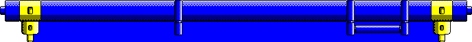
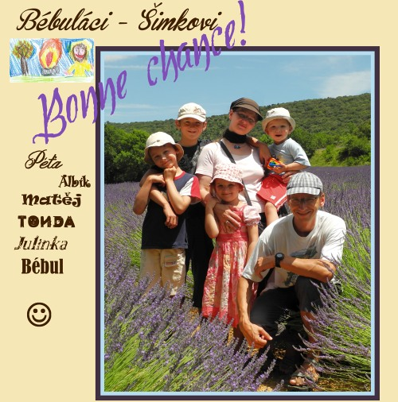
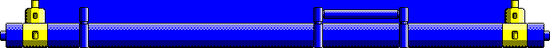
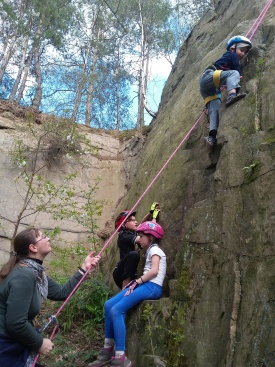

Bébuláci
Rodinka

O této stránce
Grafiku rámečků jsem namaloval po pixelech ve windows Paint. K poslepování rámečku jsem v Chrome zmačknul klávesou F12 a měnil margin čísla ze stylu.
Táta mi založil GitHub, kam jsem si všechny kroky ukládal.
Animace šplhání je podle hry Fred Loader. Vyfotili jsme dvě fotky na žebříku a v Zoneru je natočili a ořezali, aby bylo průhledné okolí. Javascript naprogramoval táta.


R O D I N K A

Jsme rodina plná dobrodružství a zážitků. Kdo nevěří, ať tam běží.
Tak vám některá dobrodružství ukážu...

L E Z E M E

Když někdo nemusí do školy, nejspíš ho najdete ve skalách.
Já taky nemusím do školy, takže lezu...
Copak existuje lepší věc, než lezení?
J E Z D Í M E N A K O L E
Do školy nemusíme, hurá, ale do skal se nějak musíme dopravit...
Copak existuje lepší varianta, než na kolech?